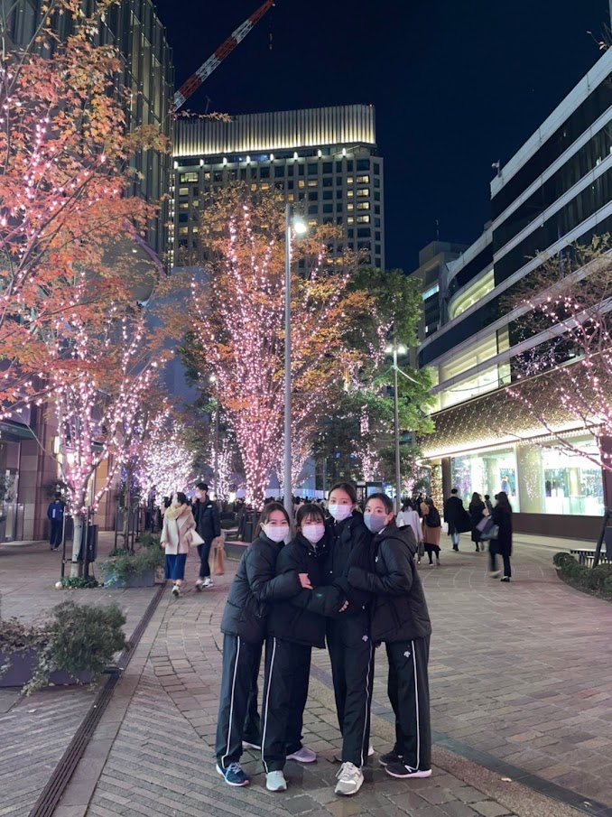

第30回目の今回は、理学部化学科の桑原葵さんです。彼女がいるとその場が明るくなる部活のムード―メーカーです！部活の雰囲気などについて話してくれました。
色々な実験を設備がとても整っている環境で行うことができます。学科生は明るく楽しい人が多いので、対面授業は多い方ですが楽しく受けることができます！履修はガイダンス通りに取れば基本的に大丈夫だと思いますが、登録ミスがないよう同じ学科の友達と確認し合いながら履修登録するのがおすすめです🙆♀️
大学から何か新しいことを始めてみようと思い、友達と体験入部をしてみて楽しかったので入部しました。
対面授業で大学に来ていることが多いのでそのまま部活に行けるよう授業前に弓具を準備して授業を受け、授業が終わり次第練習に行くようにしています。なかなか課題の量が多いので難しいですが、時間を見つけて課題を早めにやろう、という意識を持って頑張っています。
アーチェリー部の魅力はみなさん優しくてフレンドリーなので雰囲気がとても良いところです。またわからないことがあったとしても、必ず先輩方や同期が優しく助けてくださるので助かっています！
色を赤で統一したところです。統一感が出てすごく可愛いので、お気に入りです。また、私は背が低いので弓はショートハンドルを使用しています。
休みの日は家で映画を見て過ごします。アクション映画がとても好きなので、1週間に2,3本は通学時間や空きコマを活用して見ています。また、美術館や博物館の展示を見るのが好きなのでよく通っています。
ご入学おめでとうございます！大学生活は自由でとても楽しいので、勉強と両立させつつ一緒に楽しみましょう！
いかがだったでしょうか。対面授業などと合わせてアーチェリーは練習をすることができるため、両立をとてもしやすいです！！次回は理学部生命化学科の高久希さんです。